Workshop: สร้าง Test ด้วย Claude Code
ทดลองสร้าง Playwright Automated Test โดยเริ่มจาก Flow ที่มนุษย์เข้าใจ แล้วอธิบายสิ่งที่ต้องการให้ Claude Code ช่วยเขียน Code ให้
▶จาก Flow ที่ทำด้วยมือ สู่ Automated Test
เราจะลองทำรายการจริงก่อน 1 รอบ แล้วใช้ภาษาที่เข้าใจง่ายอธิบาย Flow ให้ Claude Code ช่วยสร้าง Playwright Test จากนั้นตรวจสอบ Code และ Run Test บน Browser จริง
เตรียมไฟล์สำหรับให้ Claude Code เขียน Test
เปิด Visual Studio Code → Explorer ทางซ้าย จากนั้นเปิดโฟลเดอร์ tests และสร้างไฟล์ใหม่ชื่อ nmw-motor-vibe-code.spec.ts
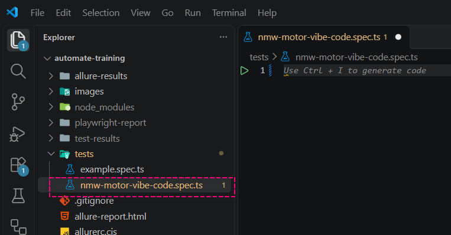
เลือกไฟล์ที่จะให้ Claude Code เขียน Code
เปิด Claude Code Extension ใน Visual Studio Code แล้วตรวจสอบว่าด้านล่างของหน้าต่าง Claude Code แสดงชื่อไฟล์ nmw-motor-vibe-code.spec.ts
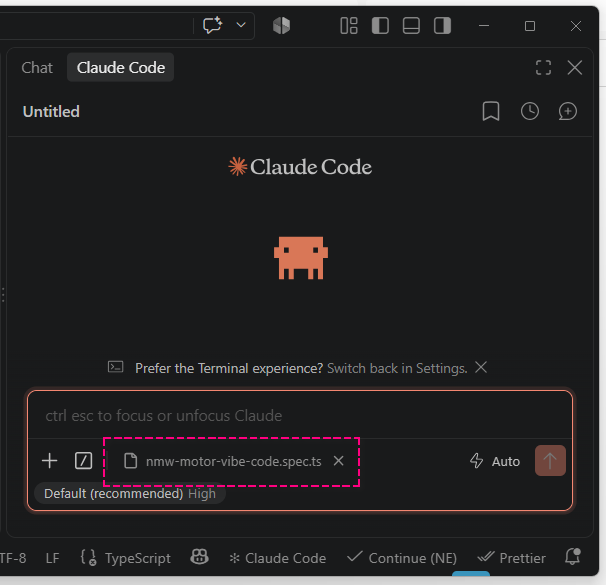
ทดลองทำรายการด้วยตัวเองก่อนเขียน Automated Test
เปิด Google Chrome แล้วเข้า URL สำหรับ Workshop:
?utm_source=test: Workshop นี้ใช้หน้า QA/Test ที่กำหนดค่านี้ไว้เพื่อข้ามขั้นตอน CAPTCHA ทำให้ Automated Test สามารถทำงานต่อเนื่องตาม Flow ที่ใช้สอนได้3.1 เลือกยี่ห้อรถ Toyota
ที่หน้าเช็กเบี้ยประกันรถยนต์ ให้เลือกยี่ห้อ Toyota แล้วไปขั้นตอนกรอกรายละเอียดรถ
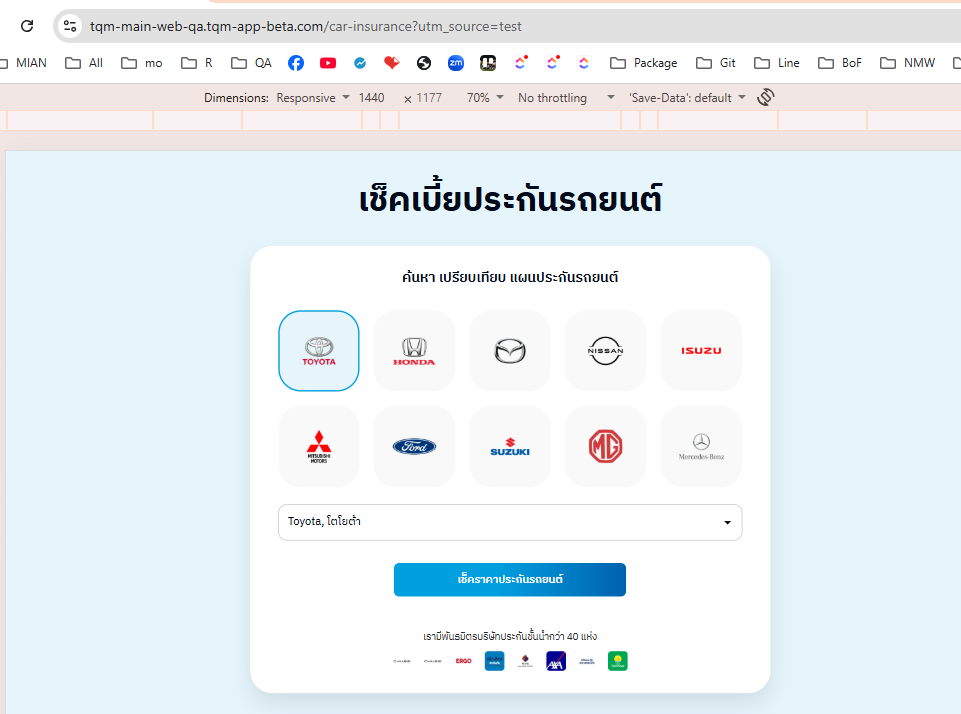
3.2 กรอกข้อมูลรถและข้อมูลส่วนตัว
เลือก Toyota → Vios → ปี 2020 → รุ่นย่อยราคา 789,000 บาท → จังหวัดชลบุรี → คุ้มครองปีนี้ จากนั้นกรอกข้อมูลส่วนตัวตามตัวอย่าง และคลิก ดูแผนประกันเลย
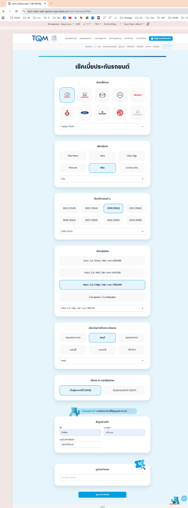
3.3 ให้ความยินยอม
หากระบบแสดงหน้าต่าง เอกสารขอความยินยอม ให้ตรวจสอบข้อความแล้วคลิก ยินยอม เพื่อทำรายการต่อ
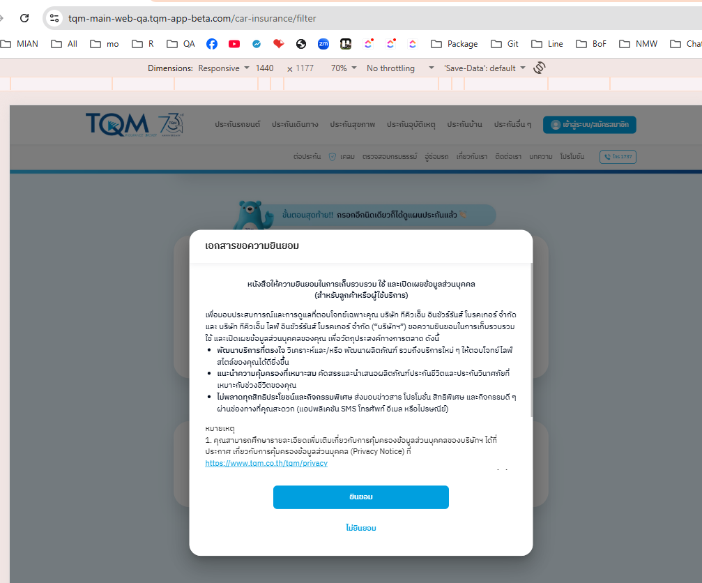
3.4 ตรวจสอบจุดสิ้นสุดของ Test
เมื่อ Browser แสดงหน้า /car-insurance/search ซึ่งเป็นหน้ารายการแผนประกัน ให้ถือว่า Flow ตัวอย่างนี้เดินทางมาถึงจุดสิ้นสุดที่เราต้องการทดสอบแล้ว
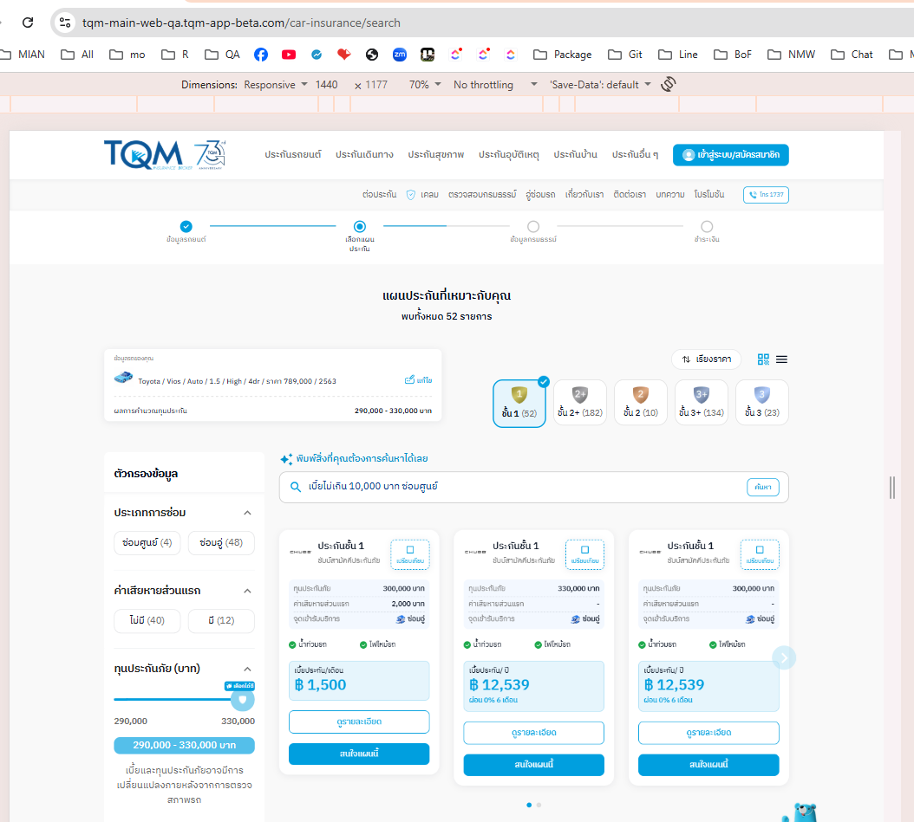
https://tqm-main-web-qa.tqm-app-beta.com/car-insurance/searchสั่ง Claude Code ด้วยภาษาที่เข้าใจง่าย
กลับไปที่ Visual Studio Code → Claude Code แล้วส่งคำสั่งด้านล่างให้ AI ช่วยสร้าง Automated Test
data-testid มีค่าอะไรเขียน Code สำหรับทำ Automated Test ด้วย Playwright Flow ซื้อประกันรถยนต์ เริ่มทำรายการที่ https://tqm-main-web-qa.tqm-app-beta.com/car-insurance?utm_source=test ใช้ข้อมูลดังนี้ - ยี่ห้อ Toyota - รุ่น Vios - ปี 2020 - รุ่นย่อยราคา 789,000 บาท - จังหวัดจดทะเบียน ชลบุรี - เลือกคุ้มครองปีนี้ - ชื่อ สิทธิกร - นามสกุล หมึกแดง - เบอร์โทรศัพท์ 0827875149 เมื่อกรอกข้อมูลครบแล้ว ให้คลิกปุ่ม “ดูแผนประกันเลย” ถ้ามีหน้าต่างขอความยินยอม ให้กดยินยอม เมื่อแสดงหน้านี้ ให้ถือว่า Test สำเร็จ https://tqm-main-web-qa.tqm-app-beta.com/car-insurance/search
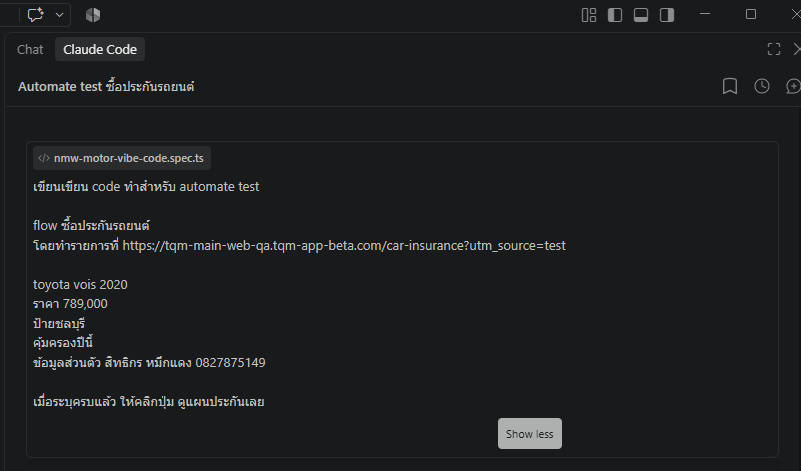
ให้ Claude Code เริ่มวิเคราะห์และสร้าง Test
หลังส่งคำสั่ง ให้ดูการทำงานในหน้าต่าง Claude Code โดย AI จะเริ่มอ่าน Project, เปิดหน้าเว็บ QA, ตรวจหา Element ที่ต้องใช้ และทดลองสร้าง Test ตาม Flow ที่เราให้ไว้
data-testid อะไร หรือปุ่มต่าง ๆ ต้องใช้ Locator แบบไหน Claude Code จะเป็นผู้สำรวจและค้นหาข้อมูลเหล่านี้จากหน้าเว็บเองดูการทำงานของ Claude Code ทีละขั้น
ส่วนนี้ไม่ใช่ขั้นตอนที่ผู้เรียนต้องทำตามทีละคำสั่ง แต่เป็นการ อ่านสิ่งที่ Claude Code กำลังทำเบื้องหลัง เพื่อให้เข้าใจว่า AI ไม่ได้สร้าง Test ขึ้นมาทันที แต่ต้องสำรวจหน้าเว็บ ทดลอง และปรับ Code ก่อน
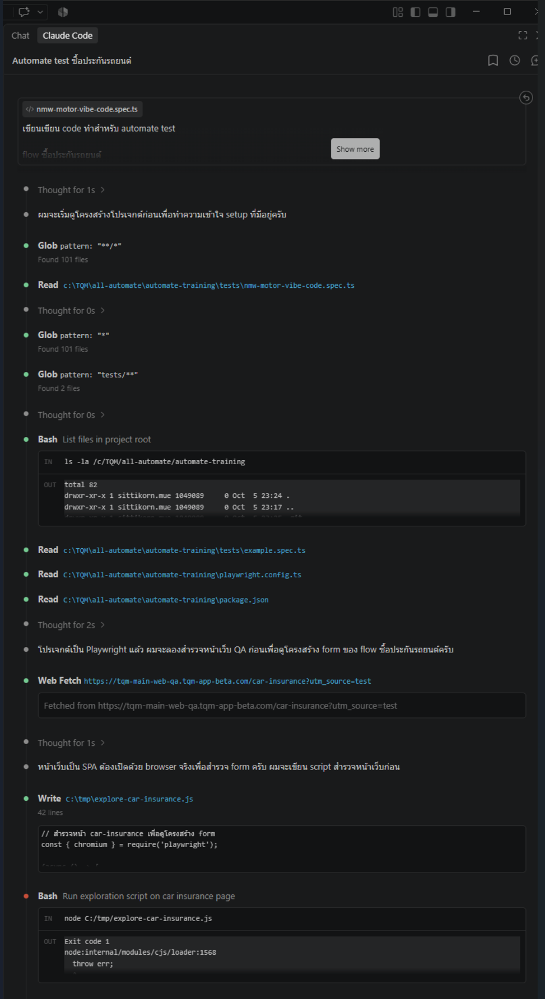
Claude Code อ่านโครงสร้าง Project และไฟล์ที่เกี่ยวข้อง เช่น
nmw-motor-vibe-code.spec.ts, playwright.config.ts และ package.json เพื่อดูว่า Project นี้ตั้งค่า Playwright ไว้อย่างไร ก่อนเริ่มเขียน Test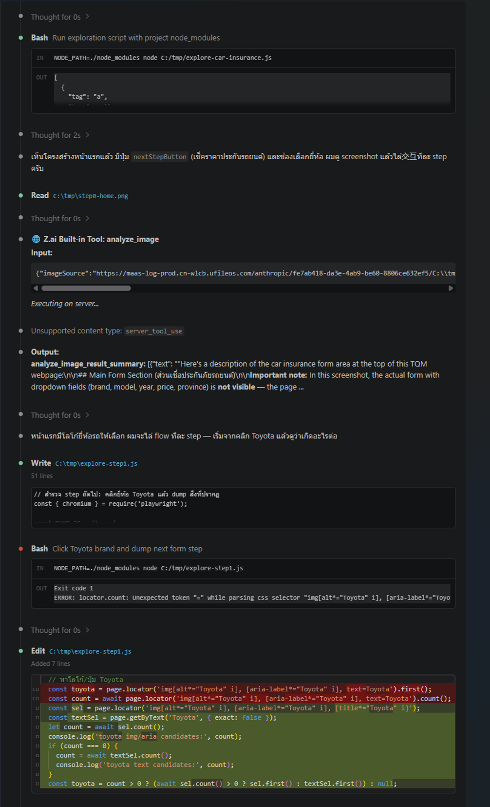
AI เปิดหน้าเว็บที่เราระบุ แล้วทดลองตรวจสอบ Element บนหน้าแรก เช่น โลโก้ Toyota และปุ่มไปขั้นตอนถัดไป หากวิธีค้นหา Element ครั้งแรกไม่สำเร็จ AI จะปรับวิธีค้นหาใหม่จากข้อมูลที่อ่านได้จากหน้าเว็บ
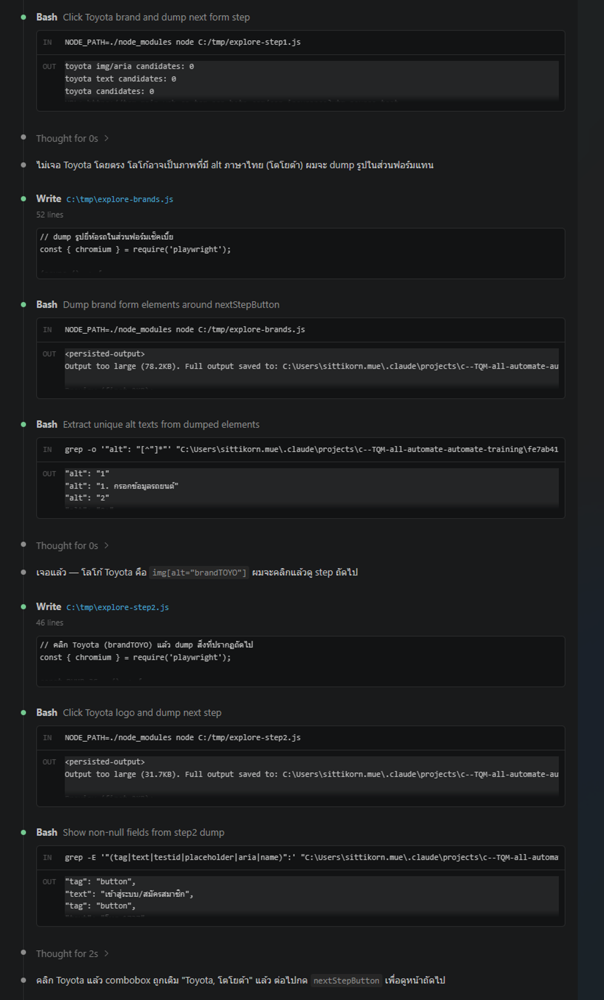
เมื่อ AI พบ Element ของ Toyota แล้ว จะทดลอง Click และอ่านข้อมูลในหน้าถัดไปต่อ เพื่อค้นหา Element สำหรับรุ่นรถ ปีรถ และข้อมูลอื่น ๆ ตาม Flow ที่เราสั่ง
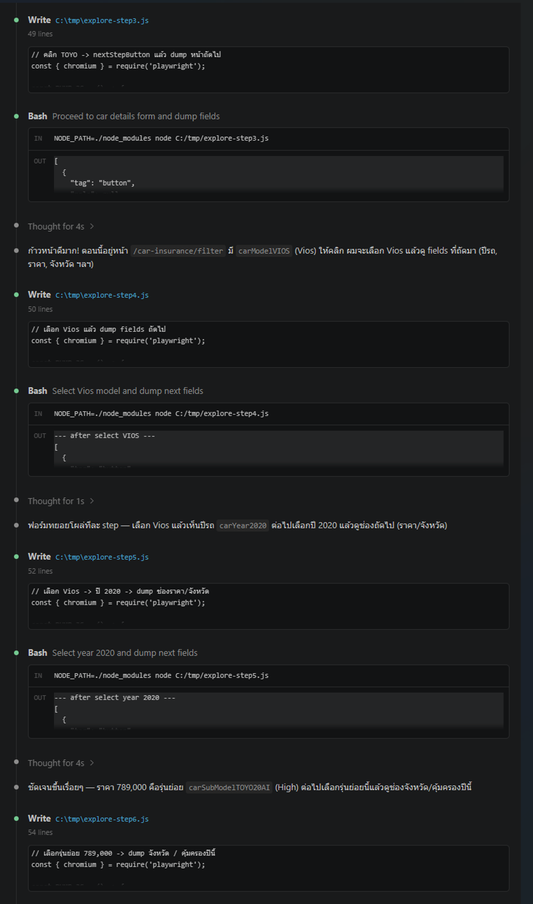
Claude Code ทดลองเลือก Vios → ปี 2020 → รุ่นย่อยราคา 789,000 บาท และตรวจสอบข้อมูลของ Element ที่แสดงขึ้นในแต่ละ Step เพื่อให้รู้ว่าต้องใช้ Locator ใดใน Test จริง
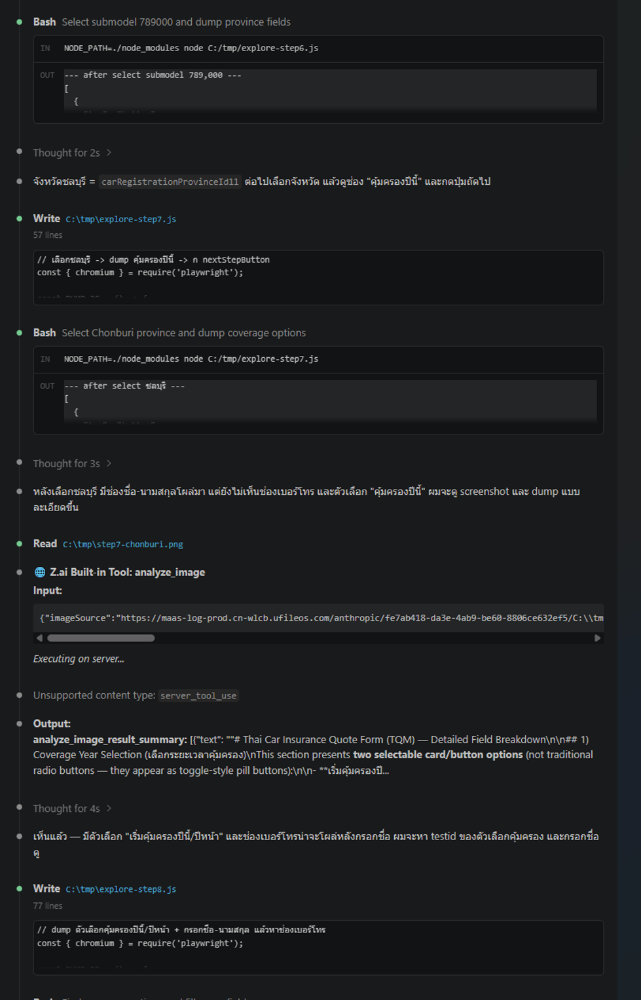
AI เดิน Flow ต่อไปยังจังหวัดจดทะเบียนและตัวเลือกคุ้มครอง เมื่อข้อมูลบางส่วนดูจากข้อความหรือ DOM ได้ไม่ชัดเจน AI อาจใช้ Screenshot ช่วยตรวจสอบสิ่งที่แสดงบนหน้าจอ แล้วจึงค้นหา Element ที่ต้องใช้ต่อ
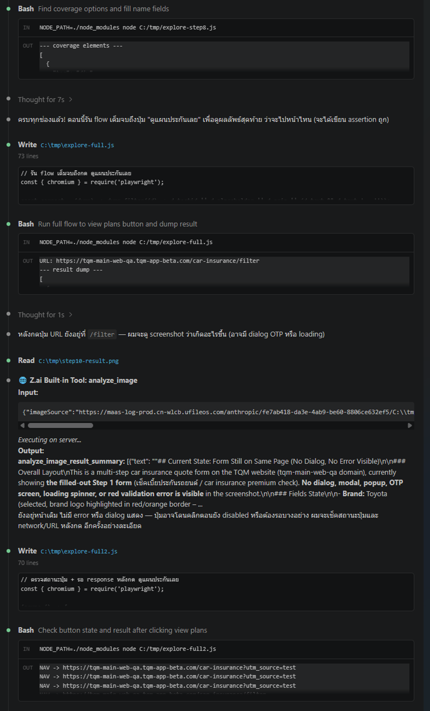
หลังรวบรวม Element หลักได้แล้ว Claude Code จะทดลอง Run Flow ต่อเนื่องตั้งแต่ต้นจนถึงปุ่ม “ดูแผนประกันเลย” เพื่อดูว่ามี Step ใดติดขัด เช่น ปุ่มยังไม่พร้อมกด หรือมีหน้าต่างเพิ่มเติมแสดงขึ้น
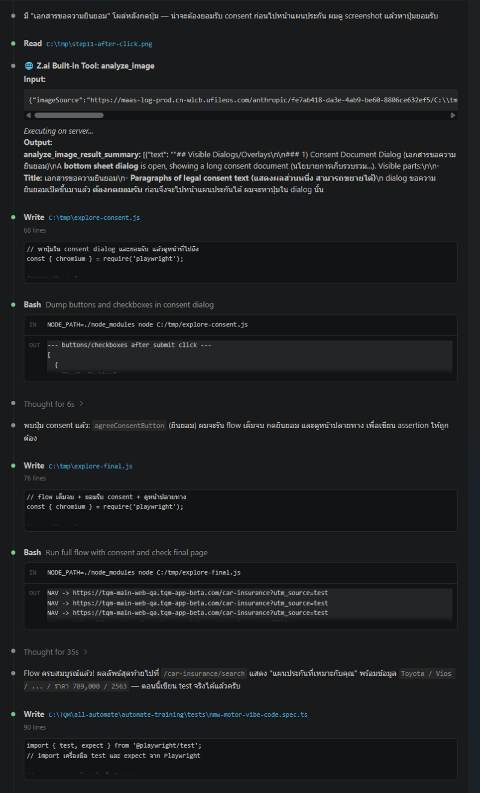
AI ตรวจพบหน้าต่าง เอกสารขอความยินยอม ที่แสดงหลังจากกดดูแผนประกัน จึงค้นหาปุ่มยินยอม เพิ่มขั้นตอนนี้เข้าไปใน Flow และตรวจสอบต่อว่าหลังยินยอมแล้วสามารถไปถึงหน้าปลายทางได้หรือไม่
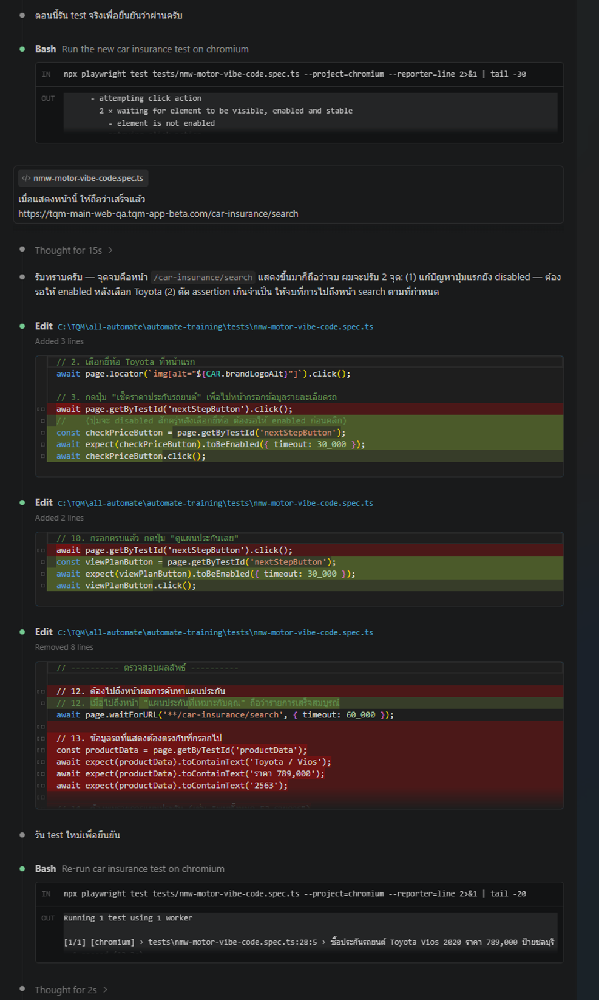
Claude Code เขียน Test ลงในไฟล์จริง แล้ว Run เพื่อตรวจสอบ ผลการ Run รอบแรกอาจพบปัญหา เช่น ปุ่มยัง
disabled อยู่ AI จึงเพิ่มการรอให้ปุ่มพร้อมใช้งาน ปรับ Assertion ที่ไม่จำเป็น และ Run Test ซ้ำจนผ่าน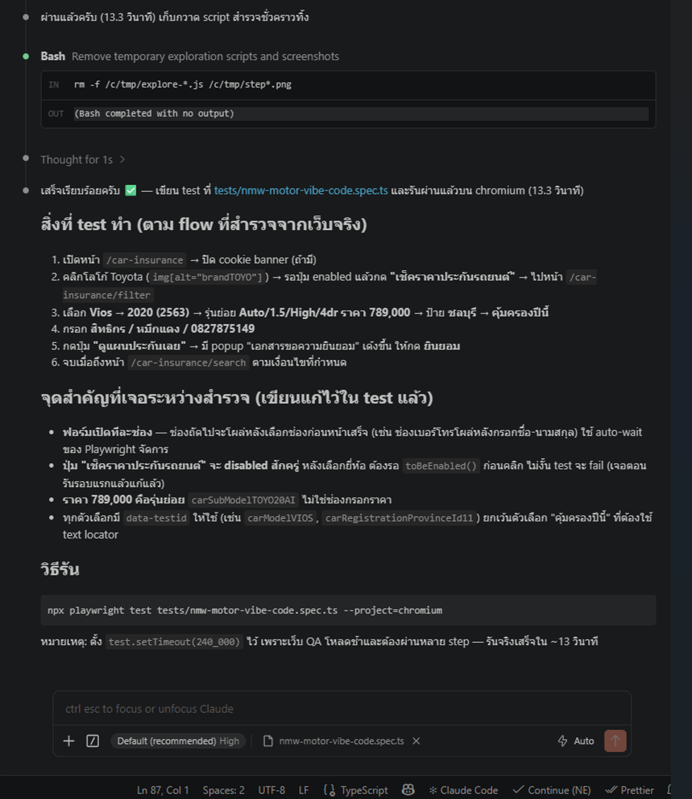
เมื่อ Test Run ผ่าน Claude Code สรุปว่า Test ทำอะไรบ้าง จุดสำคัญที่พบระหว่างสำรวจ และ Command ที่ใช้ Run Test ทำให้เราสามารถตรวจสอบได้ว่า Flow ที่ AI สร้างตรงกับสิ่งที่เราต้องการหรือไม่
ตรวจสอบ Playwright Test ที่ Claude Code สร้างให้
เปิด Visual Studio Code → Explorer → tests → nmw-motor-vibe-code.spec.ts แล้วตรวจสอบ Code ที่ Claude Code สร้างให้
/car-insurance/search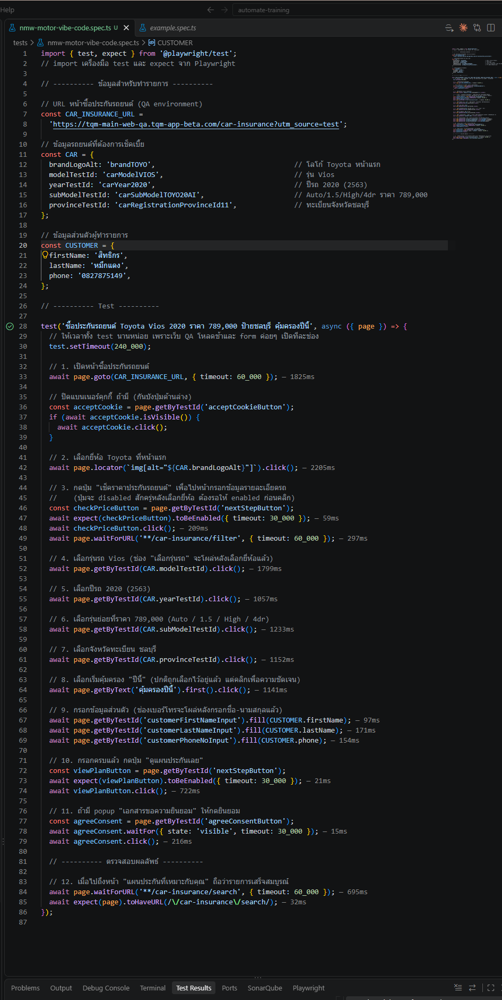
ตั้งค่าให้ Playwright เปิด Browser ระหว่าง Run Test
ใน Visual Studio Code คลิกเมนู Testing ทางซ้าย จากนั้นเลื่อนลงไปที่ Playwright → PROJECTS ให้เลือก chromium และที่ SETTINGS ให้ติ๊ก Show browser
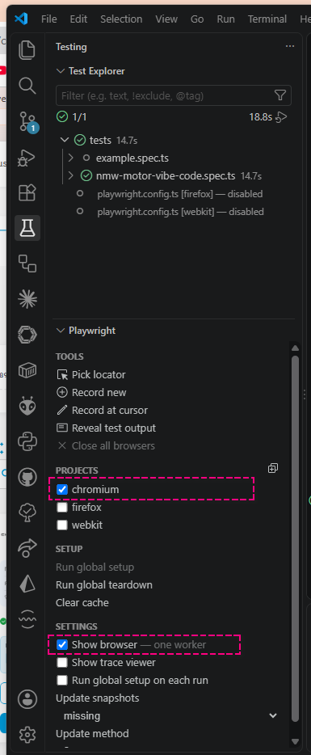
Run Automated Test จากเมนู Testing
ที่ Visual Studio Code → Testing → Test Explorer หา Test จากไฟล์ nmw-motor-vibe-code.spec.ts แล้วคลิกปุ่ม ▶ Run Test ที่อยู่ด้านขวาของชื่อ Test
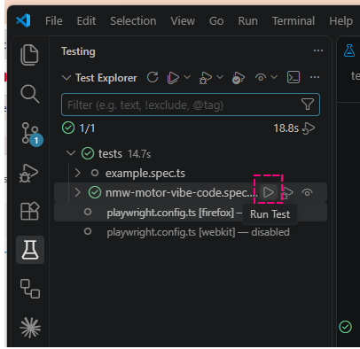
ดู Playwright ทำงานบน Browser
เมื่อเริ่ม Run Test Browser จะเปิดขึ้นมา และ Playwright จะทำตาม Code ที่สร้างไว้โดยอัตโนมัติ เช่น เลือกรถ กรอกข้อมูล กดปุ่ม และดำเนินรายการต่อไปตาม Flow
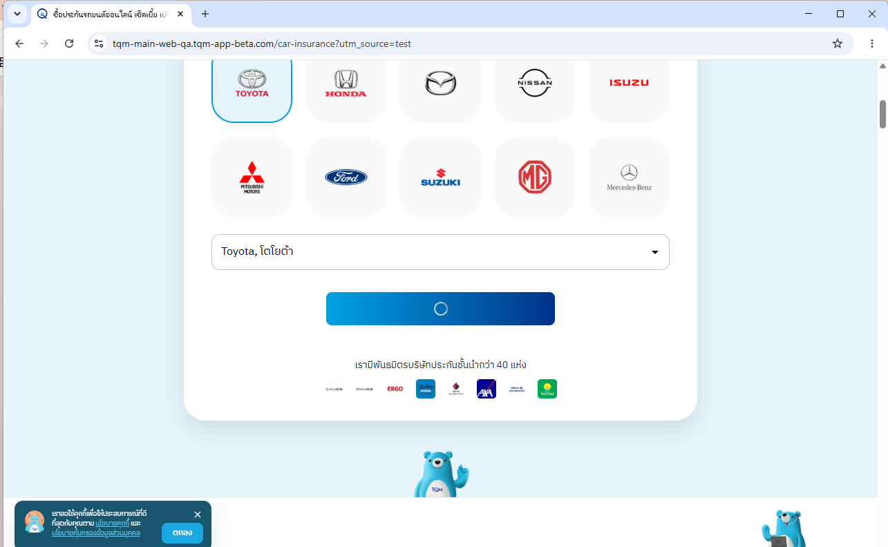
/car-insurance/search และ Test แสดงสถานะผ่าน แสดงว่าเราได้สร้างและ Run Automated Test ด้วย Claude Code สำเร็จแล้วสิ่งที่ได้เรียนรู้จาก Workshop นี้
เราไม่จำเป็นต้องเริ่มจากการจำ Locator หรือ data-testid ทุกตัว เริ่มจากทดลอง Flow ให้เข้าใจก่อน แล้วอธิบายสิ่งที่ต้องการทดสอบด้วยภาษาที่เข้าใจง่าย ให้ Claude Code ช่วยสร้าง Code จากนั้นมนุษย์เป็นผู้ตรวจสอบและ Run Test จริง เพื่อยืนยันว่า Automated Test ทำงานตรงกับสิ่งที่ต้องการ